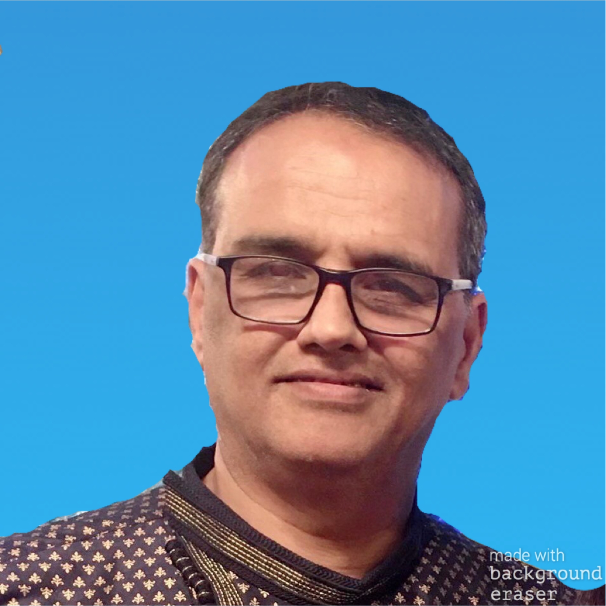

Who is Sunil Sabat?
Candidate for OSA Vice President

I was born in Berhampur, residing in California for 30 years with my wife, Manasa, and two sons. Apart from being an engineer in the IT industry with MS in Computer Science & MBA working for Microsoft, I have been active in OSA for 25 years. I have been a steadfast supporter of OSA since I was introduced to it 28 years back by Dr. Digambar Mishra. Since then, I got more involved in its activities with the encouragement of another past OSA President, Dr. Laxmi N Bhuyan, and also Hari A. Patro and among others. I have been an OSANET moderator for 20 years. I have won an OSA volunteer award and was chapter representative for four years on behalf of the newly formed OSA California Chapter. I was the vice president of NIT Warangal US alumni chapter for four years. I currently am serving as its treasurer. I will work with Dr. Sourya Mahapatra, Smaranika Rout and Prachee Behera respectfully and diligently to make OSA as strong and best it can be.